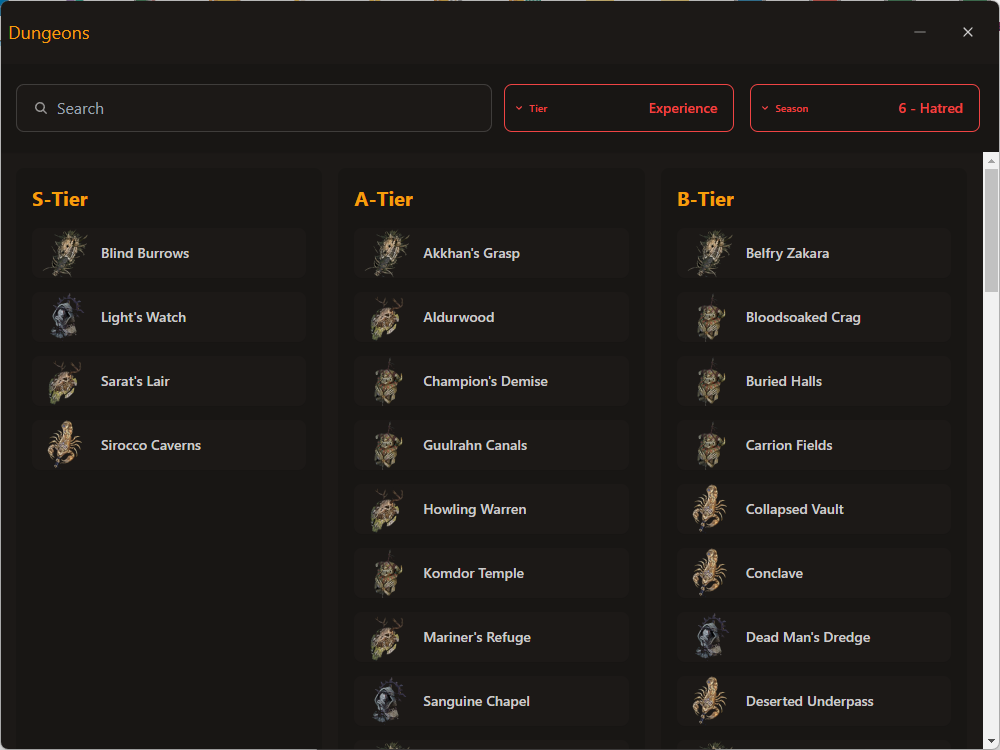

Dungeons
The Dungeons feature in dIVa provides a comprehensive Tier List of Nightmare Dungeons, helping you optimize your gameplay for experience
and glyph upgrading.

Functionality
- Search: Quickly find specific dungeons using the search bar.
- Tier Type Filter: Sort dungeons by their assigned tier type (e.g. Experience, Glyph).
- Season Filter: View dungeons specific to the current season (e.g., Season 6 - Hatred).
- Dungeon Icons: Visual representations of each dungeon for easy identification.
- Dungeon Names: Clear labeling of each dungeon within its respective tier.
Tier Types
Dungeons are categorized into the following tier types:
- Experience: Sort Dungeons by ones that offer the most experience.
- Glyph: Sort Dungeons by ones that are the most efficient for upgrading glyphs.
Using the Dungeons Feature
- Open the Dungeons window in dIVa.
- Use the search bar to find specific dungeons or browse the tier list.
- Click on the "Tier" dropdown to filter dungeons by their assigned tier type.
- Use the "Season" dropdown to view dungeons relevant to the current season.